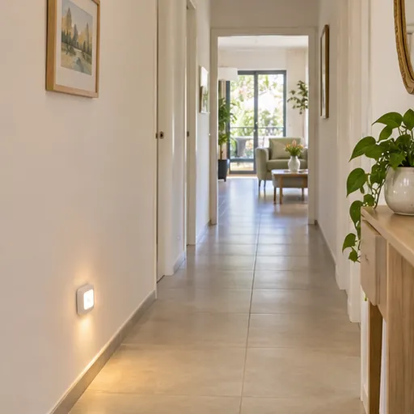

לכל ההדרכות
מניעת נפילות
אפשר להפחית את הסיכון לנפילות בעזרת התאמות בבית, תרגול מתאים ושיחה עם הצוות המטפל.
עודכן ב־
מה אפשר לעשות
- מפנים את המעברים
מרחיקים כבלים וחפצים מהרצפה. מסירים שטיחונים רופפים או מקבעים אותם היטב.
- משפרים את התאורה
מוודאים שמעברים ומדרגות מוארים, במיוחד בדרך מהמיטה לשירותים.
- בודקים נעליים ואביזרי הליכה
בוחרים נעליים סגורות מאחור עם סוליה יציבה. אם משתמשים במקל או בהליכון, כדאי לוודא עם פיזיותרפיסט או פיזיותרפיסטית שהם מותאמים לכם.
- מתרגלים כוח ושיווי משקל
מבקשים מהצוות המטפל הכוונה לפעילות שמתאימה ליכולת ולמצב הבריאותי.

רשימת בדיקה
אפשר לסמן את מה שכבר עשיתם. הסימונים נשמרים בדפדפן הזה, כשהשמירה זמינה.
מתי לפנות לעזרה
אם נפלתם, כמעט נפלתם או התחלתם להרגיש סחרחורת או חוסר יציבות, ספרו על כך לצוות המטפל ובקשו הערכה.